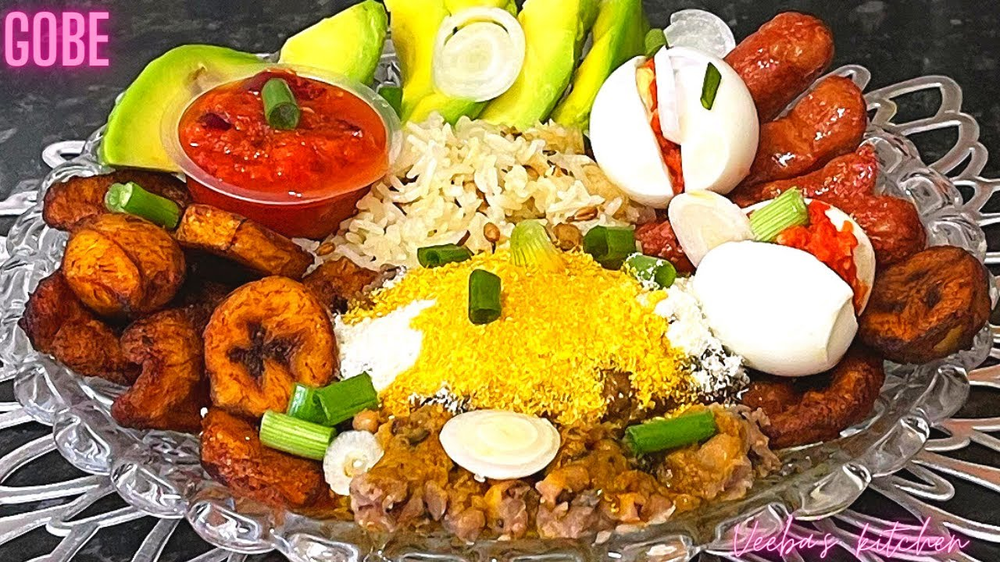

My Favorite Recipe
Ingredients
- Beans
- Palm Oil
- Gari
- Plantain
- Onion
- Pear
Instructions
- Soak beans in water for about an hour or till it becomes soft.
- Drain the water, add fresh water and bring to boil till it becomes soft. If the water around it finishes and it’s still not soft, add more and stir. Leave on fire till it softens. Remove from fire when it’s ready and set aside.
- Chop your onions and tomatoes. Add garlic and a little bit of Maggi and blend together with just a little water, enough to blend. Wash your momone and set aside.
- Put another saucepan on the fire.
- Beans
- Pour some palm oil into it.
- Add in your momone. Let it fry a bit in the palm oil.
- Add your blended tomatoes, onion, garlic and Maggi into the palm oil.
- Let it cook on fire for a while and stir where necessary.
- Add a little salt and pepper and stir.
- Finally add your cooked beans to it, as much as you want and stir.
- Leave it to simmer for a while and remove it from the fire.
- Dish some into a bowl and add some gari to it (the quantity you prefer) and mix.